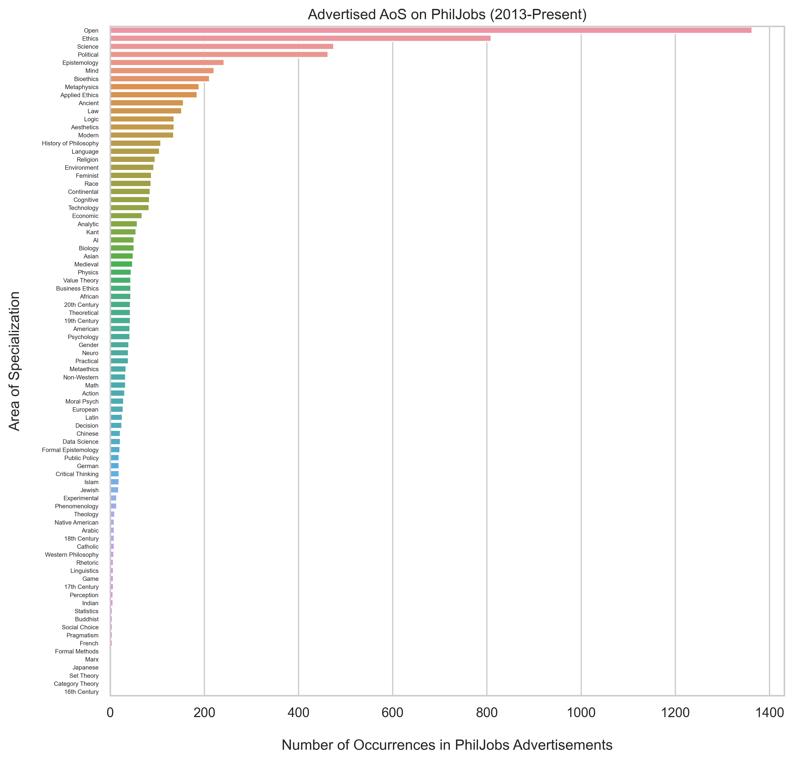
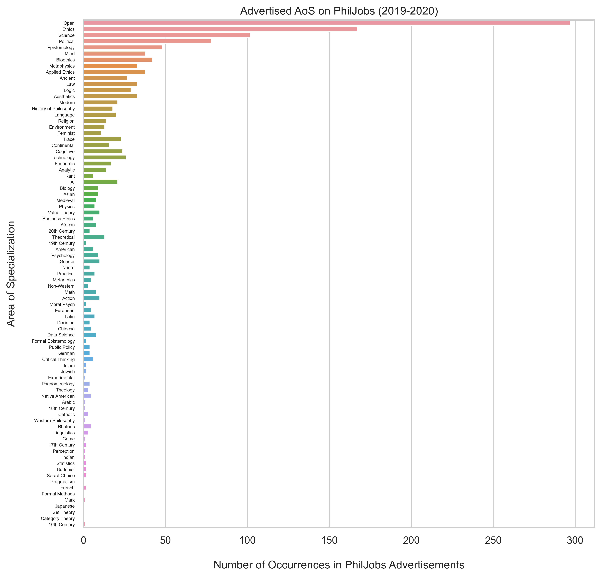
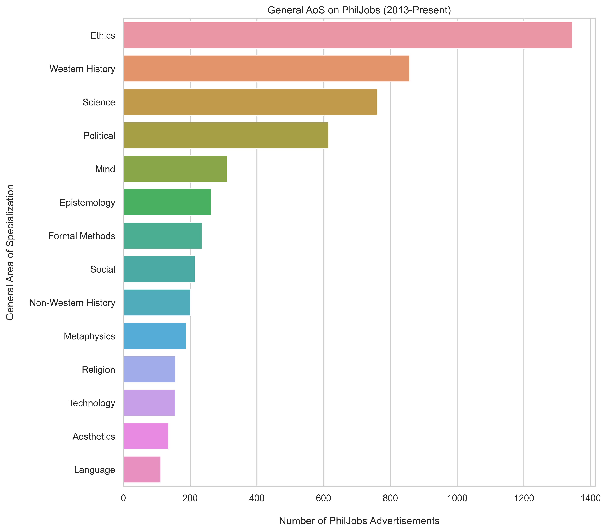
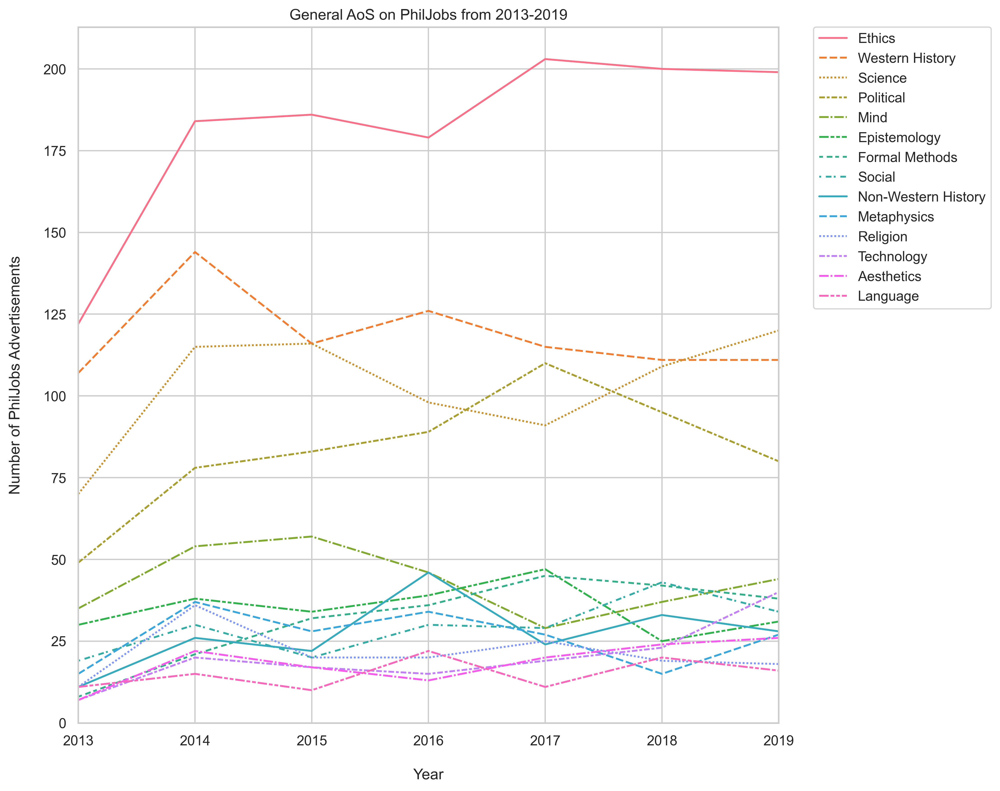
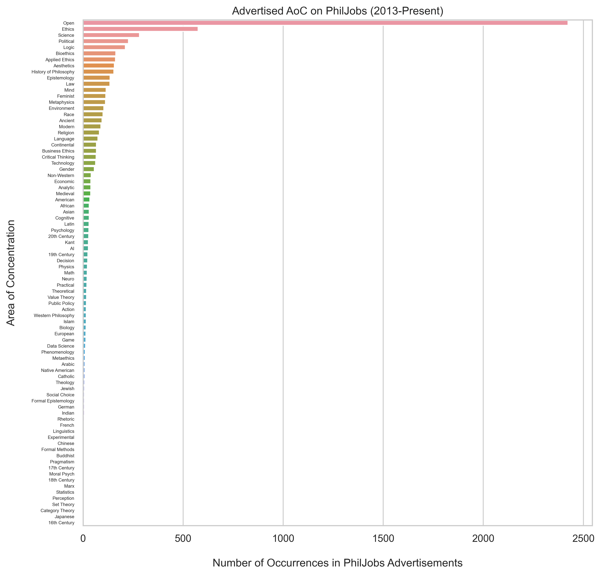
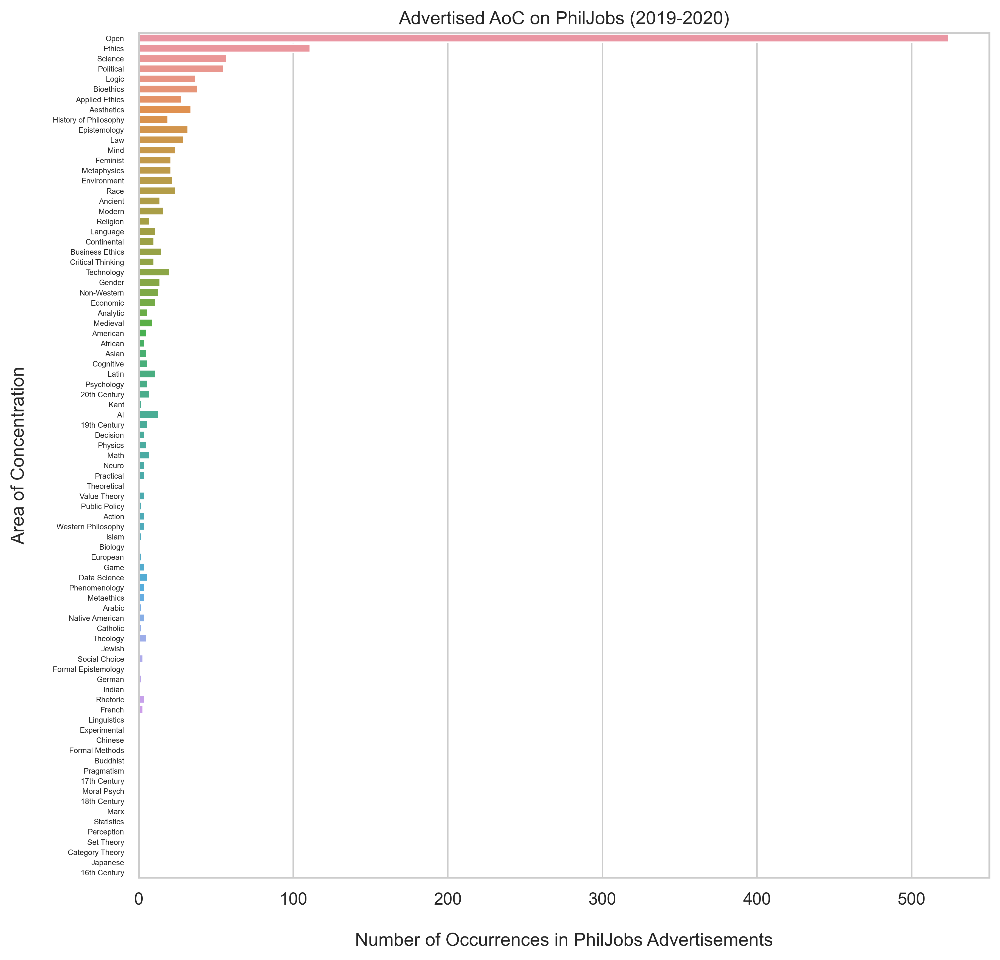
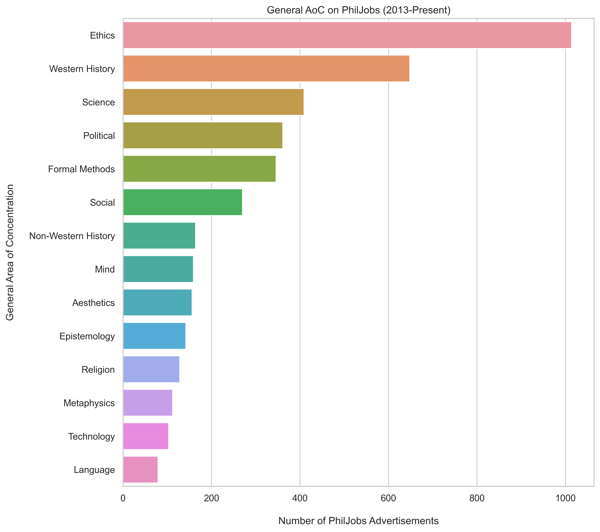
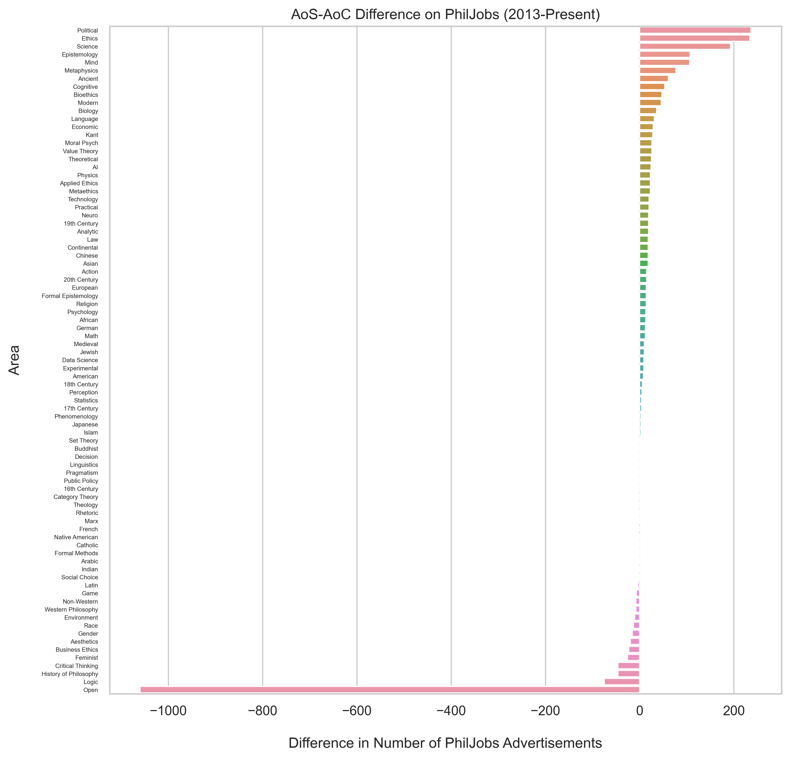
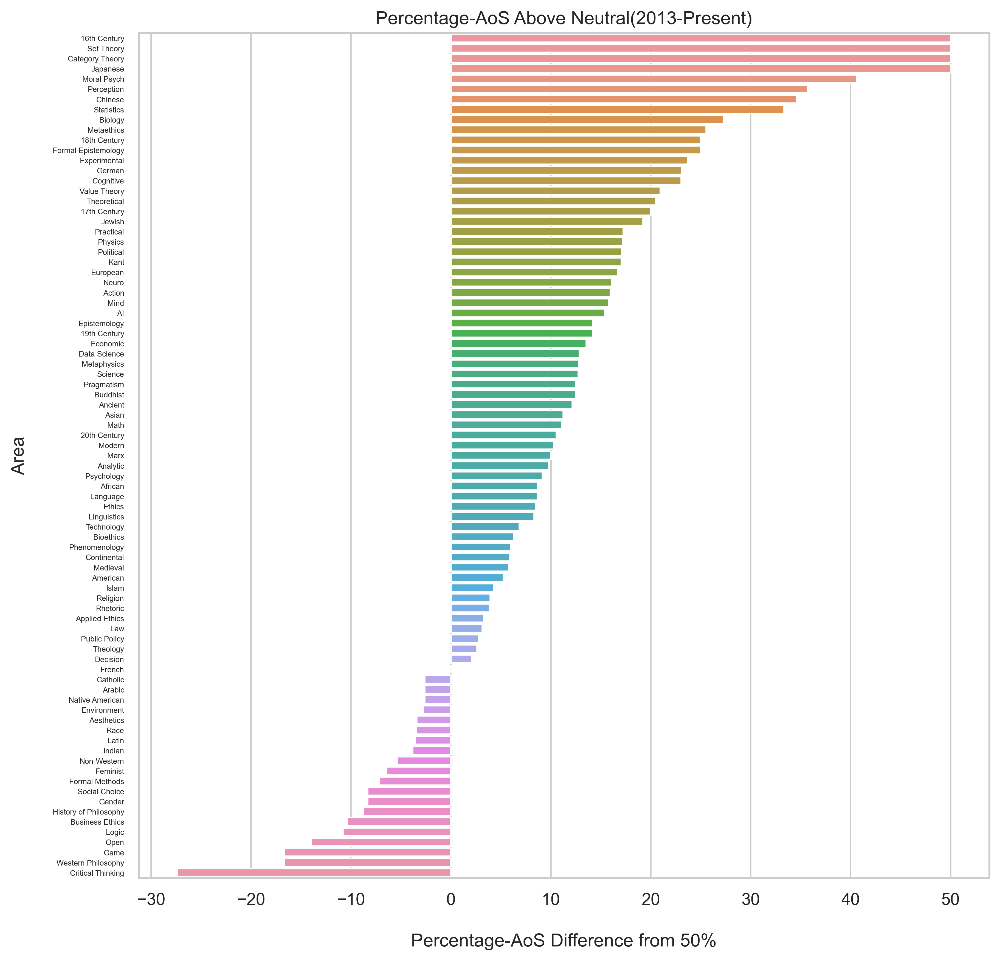
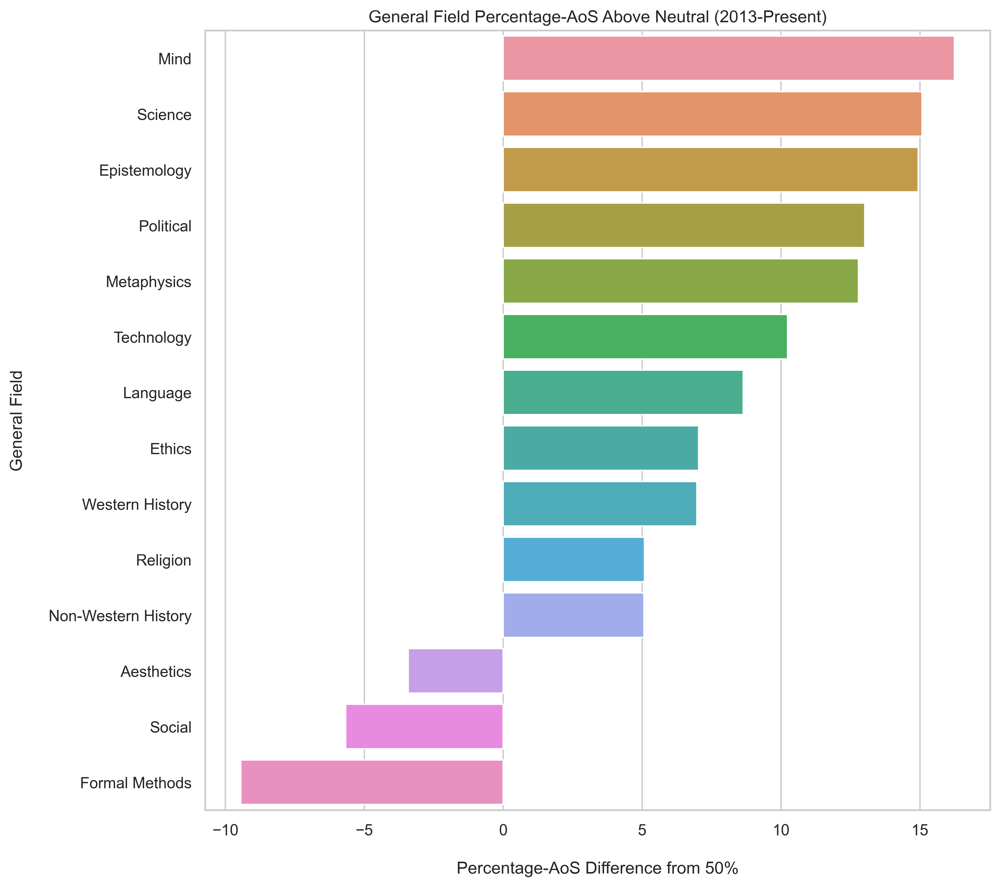

What are the most requested areas of specialization on PhilJobs? If we allow only synonyms (i.e., 'Ethics' and 'Bioethics' are distinct categories), then here are the top entries over the past 7 years:

Big fields naturally dominate, and---excluding 'Open'---ethics is king. Fixing the position of each area, here's the result when we restrict ourselves to jobs posted in 2019 and 2020:

While the most popular areas are consistent with our cumulative chart, some smaller areas have begun to deviate substantially. Zooming out and considering general fields rather than specific areas, ethics remains the most sought after specialization:

This more general picture also highlights a previously hidden interest in the history of Western philosophy. To round things out, here's how each of these general fields have fared over time:

Ethics is thus not only the most sought after AoS (specifically and generally), it's also the field that has seen the most growth on this front. In contrast, history of Western philosophy---the second most sought after field---has barely managed to hold constant following a recent slump. The third and fourth most sought after fields---philosophy of science and political philosophy---have both made gains since 2013 but with a degree of year-to-year volatility.
What are the most requested areas of concentration on PhilJobs? If we again only allow synonyms (i.e., 'Ethics' and 'Bioethics' are distinct categories), then here are the top entries over the past 7 years:

While 'Open' is substantially more common as an AoC, ethics is again the most popular area by a wide margin. Fixing the position of each area, here's the result when we restrict ourselves to jobs posted in 2019 and 2020:

As earlier, the more common areas are relatively consistent with greater variation amongst more niche specialties. Grouping areas into general fields again leaves ethics as the clear frontrunner and foregrounds an interest in the history of Western philosophy:

Finally, here's how these general fields have fared over time:

Ethics has again grown substantially though here the growth has been more volatile. History of Western philosophy meanwhile is more consistent but with only a minor overall gain compared to 2013. The most interesting trends here are the behavior of philosophy of science, political philosophy, and social philosophy (feminist philosophy, philosophy of race, and philosophy of gender) which have all shown fairly consistent growth over this period.
How do different areas fare as an area of specialization vs an area of concentration? In absolute terms, the most striking data point here is how much more prevalent 'Open' is as an AoC. While less drastic, both logic and critical thinking also appear noticeably more often as a desired AoC than as a desired AoS. On the other end of the spectrum, general fields (political philosophy, ethics, philosophy of science, philosophy of mind, epistemology, metaphysics) all appear noticeably more as a desired AoS.

For a slightly different take on the same data, we can consider what percent of an area's occurrences are as a desired AoS vs as a desired AoC. Taking a 50/50 split as a baseline, we can see that a number of areas occur almost exclusively as an AoS (set theory, category theory, 16th century philosophy, Japanese philosophy, moral psychology, philosophy of perception, and Chinese philosophy) or almost exclusively as an AoC (critical thinking, Western philosophy, and game theory).

As earlier, we can zoom out and see how all these differences in specific areas add up for general fields. In absolute terms, philosophy of science, ethics, and political philosophy all appear noticeably more as a desired AoS while formal methods, social philosophy (feminist philosophy, philosophy of race, and philosophy of gender), and aesthetics are more common as an AoC.

Looking instead at what percent of a field's occurrences are as a desired AoS vs a desired AoC, the order of the AoC-favored fields above is unchanged. The AoS-favored fields, however, shift substantially. While philosophy of science, ethics, and political philosophy all show the greatest numerical discrepancy, philosophy of mind is the most AoS-biased relative to its size.

Almost 70% of all PhilJobs advertisements for philosophy of mind are looking for a specialist while almost 60% of all formal methods advertisements are only looking for an area of concentration!